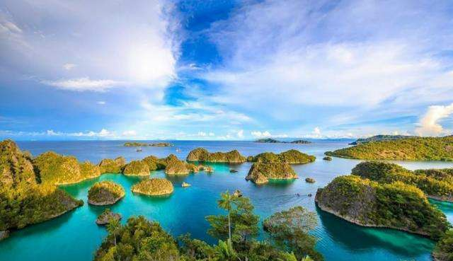

| 网站首页 | 中国 | 泰国 | 印度尼西亚 | 土耳其 | 日本 | 韩国 | 朝鲜 | 登录 |
| 介绍视频 | 简介 | 了解更多... |
| 印度尼西亚是东南亚国家，首都为雅加达。由约17508个岛屿组成，是马来群岛的一部分，也是全世界最大的群岛国家，疆域横跨亚洲及大洋洲，别称“千岛之国”，也是多火山多地震的国家。
之所以把印度尼西亚放在第三位，是因为“千岛之国”中有非常著名的举世闻名的旅游岛--巴厘岛。由于巴厘岛万种风情，景物甚为绮丽。因此它还享有多种别称，如“神明之岛”、“恶魔之岛”、“罗曼斯岛”、“绮丽之岛”、“天堂之岛”、“魔幻之岛”、“花之岛”等。2015年由美国著名旅游杂志《旅游+休闲》一项调查结果把印尼巴厘岛评为世界上最佳的岛屿之一。
|
|
|  |
| 风景指南 | 美食指南 | 酒店指南 | 其它更多 |